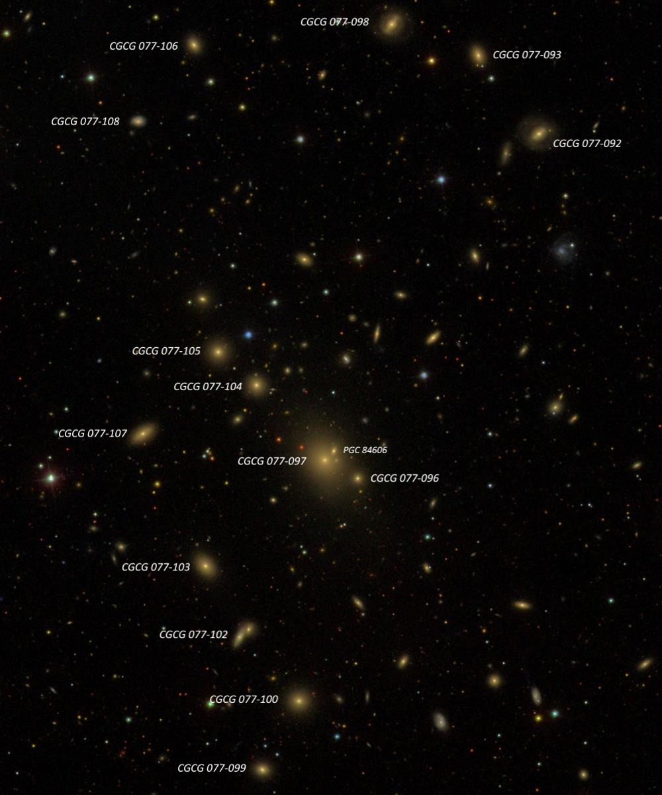

Galaxy madness at the Sierra Buttes on July 28, 2003
Before heading up to the Lassen Star Party, I spent July 27th-29th at the Sierra Buttes helping out students enrolled in San Francisco State's class on observational astronomy at the Sierra Nevada field campus. This was my 14th year participating as an observing assistant, and I was joined by friends Jim Shields and Ray Cash. Observing conditions at the 7200’ elevation site were excellent early in the week, and I snuck away from the students at times for personal observing projects.
While surveying the NGC, I had previously observed NGC 5919 and 5920, which are outlying members of the rich cluster Abell 2063 in Serpens. But within the main portion of the cluster, the new version of the Uranometria 2000 atlas only plots a single galaxy, MCG +02-39-020. Looking at an image of the region, I knew the cluster was teeming with faint galaxies. The single brightest member, though, is probably IC 1116, which was discovered by Edward Swift, the 19-year-old son of Lewis Swift.
This rich galaxy cluster was slipping lower into the western sky when I started observing, so I was amazed to identify 21 new galaxies in the cluster -- mostly in the same high power field!! These galaxies generally ranged from mag 15.5 to 15.7 in the blue photographic range and sometimes required 300× to distinguish from faint stars. As you might guess, there wasn't much detail in these small 10" to 15" blobs -- just logging and identifying them all was a major accomplishment.
IC 1116
15 21 55.4 +08 25 25
Size: 1.6'x1.6', Vmag = 13.5
I logged this galaxy as fairly faint, moderately large, slightly elongated N-S, 1.0' × 0.8'. Contains a very small brighter core. Located 4.5' ESE of mag 8.7 SAO 120958 and ~20' SW of the rich core of AGC 2063.
CGCG 077-097 = MCG +02-39-020
15 23 05.4 +08 36 32
Size: 0.9' × 0.9', Vmag = 13.6
The brightest central member of Abell 2063 (cD-type) appears fairly faint and small, ~0.8' diameter. At first glance I assumed it was roughly circular with a small brighter core, but on close examination it resolves into a very close pair of galaxies. MCG +02-39-020 is on the east side, and it seems slightly elongated N-S, ~0.8' × 0.7'. Just off its west edge is a very small “knot” (the galaxy CGCG 077-096) and there may be a third galaxy in this clump at the NE edge. CGCG 077-097 is the brightest galaxy in the core of AGC 2063 (excluding IC 1116, which is 20’ SW of the core) and a total of 21 galaxies in the vicinity were tracked. Of these, 16 members were within just 15' of MCG +02-39-020! This chart shows most, but not all, of the members viewed.
